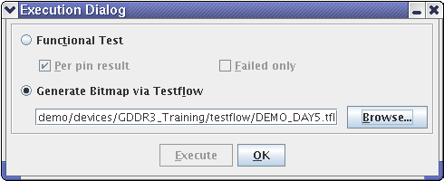

Execution Dialog window
The Execution Dialog window lets you specify options for executing a test pattern on the tester.

You can open the dialog in several ways:
- From the MTL Compiler Control dialog, by clicking the Configuration button.
- From the Memory Test Manager, by clicking the Execution Dialog button on the toolbar.
- From the Memory Test Manager, by choosing .
If you open the dialog from the MTL Compiler Control window, the Execute button is not available.
Elements of the dialog
In the dialog, you can choose between two execution options and then store the settings or execute the test:
- Functional Test: If you choose this option, the MTL compiler executes
the current pattern after compiling it. Two additional options are available:
- Per pin result: If this option is checked, the pass or fail result is displayed for each pin. If it is unchecked, only an overall pass or fail result is displayed.
- Failed only (only available if Per pin result is checked): Only failed pins are listed.
- Generate Bitmap via Testflow: If you choose this option, the compiler
executes the specified testflow after having compiled the pattern. You can specify the testflow
by entering its path in the text field or by clicking Browse:
- Browse: Clicking this button lets you choose the testflow to execute.
- Execute: Clicking this button executes the specified testflow on the tester. The button is unavailable if the dialog has been opened from the MTL Compiler Control dialog.
- OK: Clicking this button closes the dialog, saving the current settings.
Functional changes
- Introduced before SmarTest 6.3.2